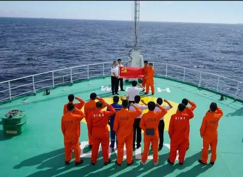

-

福建省启动赤潮加密监测
随着天气逐步升温，福建海域进入赤潮高发期。近日，福建省2021年度赤潮加密监视监测首航次任务在宁德、福州、平潭、莆田等地同步开展。
-

海洋地质九号”船完成海试任务
4月7日17时，重约2.4吨的深海移动式电视抓斗被钢缆吊起并缓缓回收至甲板。至此，“海洋地质九号”船2021年南海海试第二航段11套设备海试任务全部完成。
-

中国“海牛Ⅱ号”海试成功 刷新世界纪录
中新网长沙4月8日电(傅煜 唐亚慧 李凌蕴)湖南科技大学8日对外透露，由该校领衔研发的中国首台“海牛Ⅱ号”海底大孔深保压取芯钻机系统，于北京时间4月7日23时许在南海超2000米深水成功下钻231米，刷新世界深海海底钻机钻探深度。
-

中科院海洋所深海难培养微生物特殊生命过程认知
前，国际生物学期刊The ISME Journal刊发了题为“Characterization of the first cultured free-living representative of Candidatus Izemoplasma uncovers its unique biology”的文章，